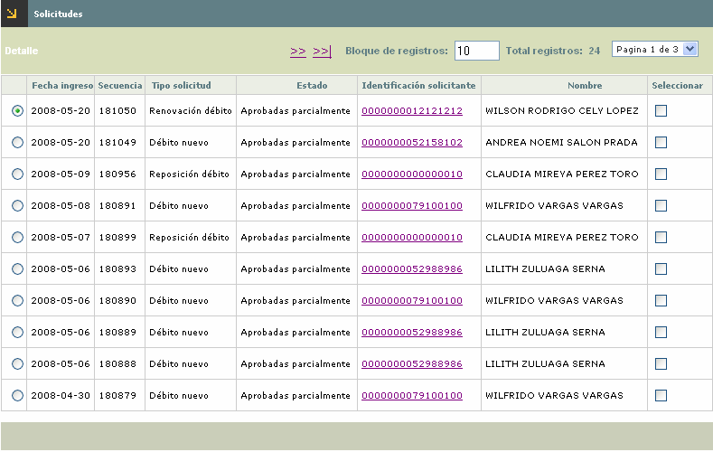
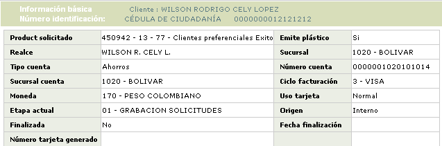

Solicitudes por etapa - Grabación solicitudes
Solicitudes: Este formulario corresponde al segundo paso del wizard, al que se accede desde la opción principal Solicitudes por etapa. En él se pueden consultar las diferentes solicitudes de afiliación que se encuentran en la etapa de Grabación.

Fecha ingreso |
Muestra la fecha en la cual se grabó la solicitud. |
Secuencia |
Campo de salida que ilustra el número consecutivo asignado por el sistema y que permite diferenciar e identificar las solicitudes. |
Tipo solicitud |
Muestra el tipo de solicitud a tramitar en el formulario. |
Estado |
Indica la condición en que se encuentra la solicitud al arribar a esta etapa, las cuales pueden ser: Aprobada totalmente o Aprobada parcialmente. |
Identificación solicitante |
Contiene tanto el tipo de documento como el número del mismo, que identifica al solicitante. |
Nombre |
Despliega el nombre del solicitante. |
Adicionalmente, se puede consultar el detalle del cliente por medio del vínculo ubicado en la Identificación del solicitante.
A través de la opción Detalle de la parte superior, se puede consultar la solicitud seleccionada.

Adicionalmente, el formulario cuenta con botones en la parte inferior izquierda, a través de los cuales se pueden tomar acciones que afectan a todas las solicitudes que se encuentren filtradas.
|
Avanzar todas las solicitudes: Funcionalidad que permite pasar las solicitudes a la siguiente etapa siempre y cuando cumplan con los requisitos necesarios acorde con los parámetros definidos; en caso contrario la solicitud será negada. |
Cada una de las solicitudes cuenta con una casilla de verificación, que debe ser marcada por el usuario en caso de querer aplicar acciones sólo a solicitudes específicas. Estas solicitudes se mostrarán en el tercer paso del wizard: Resumen.